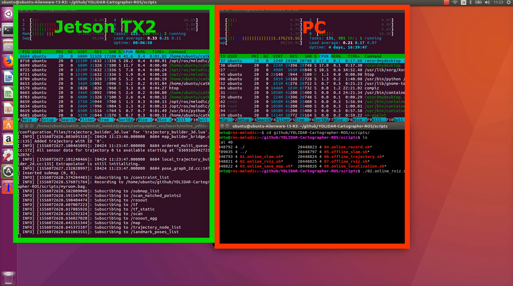

Online SLAM
オンラインSLAMはリアルタイムSLAMのことです。
マップ作成と、rosbagへの保存、マップの保存が可能です。
動画

起動
rosbagに保存する時、引数に保存するファイル名を指定します。拡張子は.bagにします。
実行はTX2(car)でおこないます。
1 2 | cd ~/github/YDLIDAR-Cartographer-ROS/scripts ./01.online_slam.sh myroom.bag |
引数を与えない場合はrosbagに保存しません。
1 2 | cd ~/github/YDLIDAR-Cartographer-ROS/scripts ./01.online_slam.sh |

rviz
RVizはPCで起動します。
TX2で実行したonline SLAMの起動を待ってから実行してください。
1 | ./02.online_rviz.sh |

走行
室内を2周してマップを完成させます。loop closureにより、1周よりも精度がよくなりやすいです
自己位置推定は旋回に弱いので、出来るだけゆっくり走行します。（0.5km/h程度）

マップ保存
pbstream
pbstreamはCartographer-ROSでLocalization（自己位置推定）を実行する時に使います。
turtlebot3 navigationでは、デフォルトのmap_serverをcartographer_rosに変更することで、navigationにも利用できます。この場合、IMU無しで動作可能になります。
引数で出力ファイルに指定するファイルの拡張は.pbstreamにしてください。
1 | ./03.online_save_pbstream.sh myroom.bag.pbstream |
ros map
ros mapはturtlebot3 navigationでLocalizationとPath Plannerを実行する時に使います。この場合、別途IMUが必要になります。
rosmap_2d_yyyymmddhhmmss.pgmとrosmap_2d_yyyymmddhhmmss.yaml`が作成されます。
1 | ./04.online_save_rosmap.sh |

rosmap_2d.yaml
1 2 3 4 5 6 | image: rosmap_2d.pgm resolution: 0.050000 origin: [-8.979110, -11.103004, 0.000000] negate: 0 occupied_thresh: 0.65 free_thresh: 0.196 |
その他
グラフ表示
ノードをグラフで表示
1 | rosrun rqt_graph rqt_graph |

説明
01.online_slam.sh
01.online_slam.shではいくつかの実行を行っています。
ラジコンの走行中はモニターが見れないので、他のPCでRVizを起動出来るようにexportで環境変数を設定しています。
自分(tx2)のIPはJetson TX2(car)のIPアドレスになります。
1 2 3 | export ROS_MASTER_URI=http://自分(tx2)のIP:11311 export ROS_IP=自分(tx2)のIP source /home/ubuntu/catkin_ws/install_isolated/setup.bash |
rosbagに保存する為のファイル名を引数から取得します。
1 2 3 4 5 6 7 | case $1 in
/*\.bag)
OUTPUT_BAG=$1
;;
*.bag)
OUTPUT_BAG=$PWD/$1
esac
|
roscoreを起動
1 2 | roscore & sleep 5 # wait until roscore launch |
YDLIDARを起動
1 2 | roslaunch ydlidar lidar.launch & sleep 15 # wait until roscore launch |
online SLAMを起動
引数があるときはrosbagへの保存を実施。
1 2 3 4 5 6 7 8 9 | if [ -z ${OUTPUT_BAG} ]; then # ${OUTPUT_BAG} is empty. roslaunch cartographer_ros online_ydlidar_2d_slam.launch else # Save to rosbag. roslaunch cartographer_ros online_ydlidar_2d_slam.launch & sleep 5 rosrun rosbag record -a -O $OUTPUT_BAG fi |
02.online_rviz.sh
02.online_rviz.shは他のPC上で実行することになります。
roscoreを起動しているマシン(tx2)のIPはJetson TX2(car)のIPアドレスになります。
自分(pc)のIPは02.online_rviz.shを実行するPCのIPアドレスになります。
1 2 3 | export ROS_MASTER_URI=http://roscoreを起動しているマシン(tx2)のIP:11311 export ROS_ID=自分(pc)のIP source /home/ubuntu/catkin_ws/install_isolated/setup.bash |
rvizを起動
1 | roslaunch cartographer_ros online_ydlidar_2d_rviz.launch |
他のPCのROSバージョンが異なる場合は、RVizはmd5sum Errorが発生して正常に動作しない可能性があります。
https://answers.ros.org/question/261071/rviz-client-md5sum-error/
Cartographer-rosはmaster branchを使うため、TX2とPCで同じコミットを利用する必要があります。
03.online_save_pbstream.sh
走行後、pbstream形式で保存することが出来ます。
1 | ./03.online_save_pbstream.sh output.pbstream |
第一引数に出力用のファイル名を拡張子.pbstreamで指定します。
1 2 3 4 5 6 7 8 9 10 11 12 13 | # usage:
# ./03.online_save_pbstream.sh output.pbstream
# https://github.com/googlecartographer/cartographer_ros/blob/master/docs/source/assets_writer.rst
case $1 in
/*\.pbstream)
OUTPUT_PB=$1
;;
*.pbstream)
OUTPUT_PB=$PWD/$1
esac
echo ${OUTPUT_PB}
|
環境変数を設定
1 2 3 | export ROS_MASTER_URI=http://192.168.0.48:11311 export ROS_IP=192.168.0.48 source /home/ubuntu/catkin_ws/install_isolated/setup.bash |
online SLAMの更新を停止
1 | rosservice call /finish_trajectory 0 |
pbstream形式でマップを保存
1 | rosservice call /write_state "{filename: '${OUTPUT_PB}', include_unfinished_submaps: true}"
|
公式ドキュメントではinclude_unfinished_submaps: 'true'となっていますが、trueは文字列型'true'ではなくbool型trueである必要があるため、bool型のtrue指定します。trueの代わりに1でも可能です。
04.online_save_rosmap.sh
走行後、ros mapとして保存することが出来ます。
rosmap_2d_yyyymmddhhmmss.pgmとrosmap_2d_yyyymmddhhmmss.yamlが作成されます。<br>
pgmファイルは画像ファイルなので、gimpを使ってpngファイルに変換することが出来ます。<br>
実行は、01.online.sh`を終了する前におこないます。
1 | ./04.online_save_rosmap.sh |
1 2 3 | export ROS_MASTER_URI=http://roscoreを起動しているマシンのIP:11311 export ROS_ID=自分のIP source /home/ubuntu/catkin_ws/install_isolated/setup.bash |
ros mapとして保存
1 2 3 | DATE=`date '+%Y%m%d%H%M%S'` rosrun map_server map_saver -f ./map/gridmap_2d_${DATE} |
合成画像：